阿克西斯教團相關者介紹
信奉阿克婭的教團，基本上教徒無一正常者。被形容是比安樂少女還麻煩，比不死族怪物還難纏的集團。動畫被追加得更為誇張。
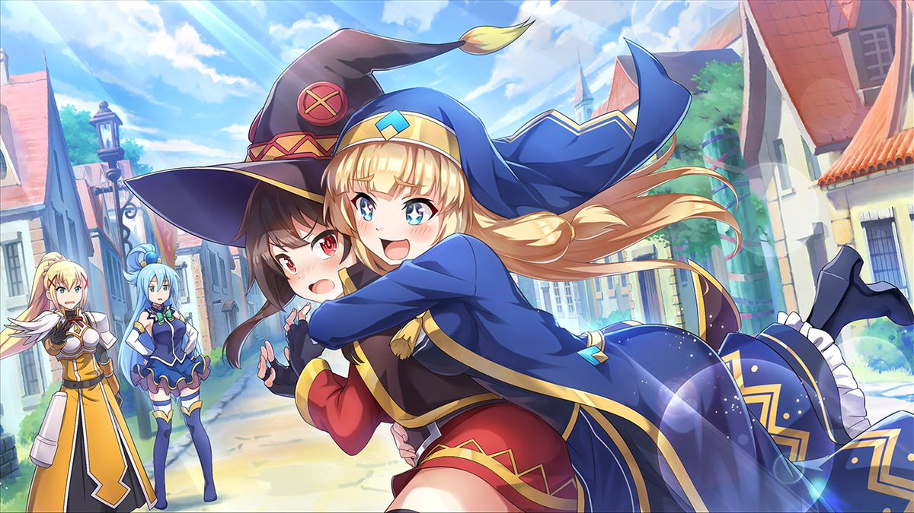
賽希莉（セシリー，Cecily，聲：ファイルーズあい）
阿克西斯教團的祭司，百合，崩壞型美少女。對萌物完全沒有抗性，但認真起來超強。雖然人很崩壞，但心地善良，曾收留惠惠（但代價是要幫忙傳教）。常賣禁品瓊脂史萊姆。
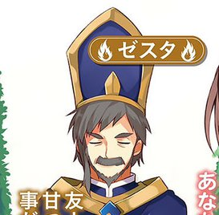
傑斯塔（ゼスタ，Zesta）
阿克西斯教團的最高負責人兼大祭司，是個把性騷擾當飯吃的大叔。跟賽希莉一樣，認真起來超強。從阿克婭可以憑一己之力淨化所有被污染的溫泉，看出阿克婭女神身分，並決定不公開崇拜而是默默看顧阿克婭。
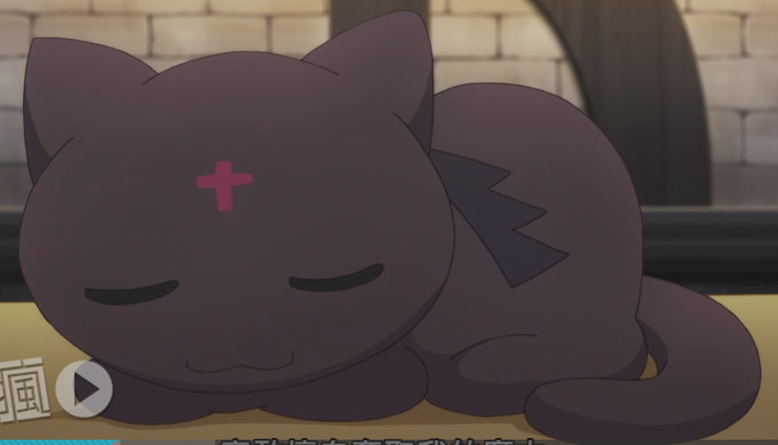
點仔／豆之助（ちょむすけ，Chomusuke，聲：生天目仁美）
惠惠的使魔，是隻背上有小翅膀的黑色母貓。吃魚之前還會噴火烤魚，只有被和真和阿克婭看過，和真說給其他人聽，但沒有人相信。 本體其實是強大邪神「沃芭克」，但目前的能力和精神意識是貓的型態。原本封印在它處，是不知哪個紅魔族說「封印著邪神的地方似乎很帥氣啊」，就擅自綁架了前人封印起來的邪神，並再次封印在了紅魔之里裏的一角，把那裏打造成了景點。邪神的封印曾經被解開過兩次，第一次是惠惠五歲時不小心解開，第二次是米米抱著玩耍的心態解開。
邪神沃芭克女性分身被消滅後與豆之助（點仔）合併，原本討厭水的豆之助（點仔）變得愛泡溫泉(動畫版中則是一開始就喜歡泡澡)。曾經被和真請求偷惠惠的內褲，偷回來的話和真會給他吃更好吃的東西。
和維茲關係非常好，經常趴在維茲的胸前。
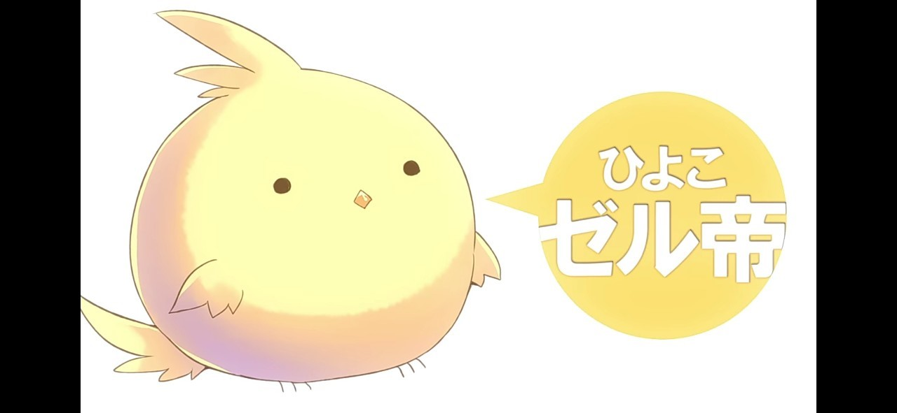
爵爾帝／金士福特·爵爾特曼（ゼル帝／キングスフォード・ゼルトマン，Emperor Zell/Kingsford Seltmann）
全名金士福特·爵爾特曼，暱稱爵爾帝。阿克婭聽信商人謊言，花了大錢買了一顆龍蛋，結果孵出來的卻是一隻小雞。由於阿克婭在爵爾帝孵化期間灌注相當大魔力，因此爵爾帝出生時即具有相當大魔力的體質。可是因為本質只是一隻雞，所以佐藤和真等人預計在爵爾帝長大後就將牠宰來吃、以吸收魔力的備用食物。
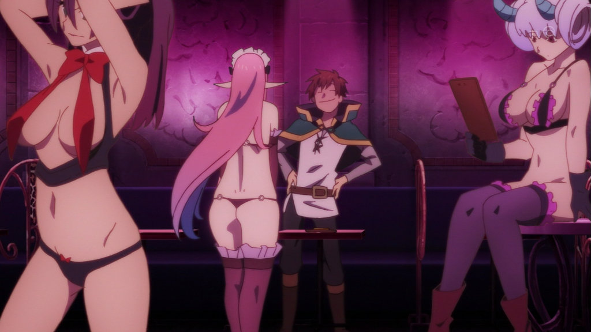
夢魔（サキュバス，Succubus，聲：三石琴乃、長谷美希、山下七海）
在阿克塞爾中為男性冒險者從事夢中大保健的工作，由於三小時收費僅收5000艾莉絲且僅吸收一點點精氣，不影響冒險者工作及生活，因此極受男性冒險者歡迎，為降低城內的犯罪率做出了極大的貢獻，甚至使等級30級的男性冒險者都還不想離開新手城鎮。
阿克婭發現夢魔開店的地方時，原本要全面消滅，在巴特爾的對抗下讓和真以「要是消滅了你們的話會被城裏的男性冒險者視作世仇」為由，將阿克婭拖走。崇拜巴尼爾。
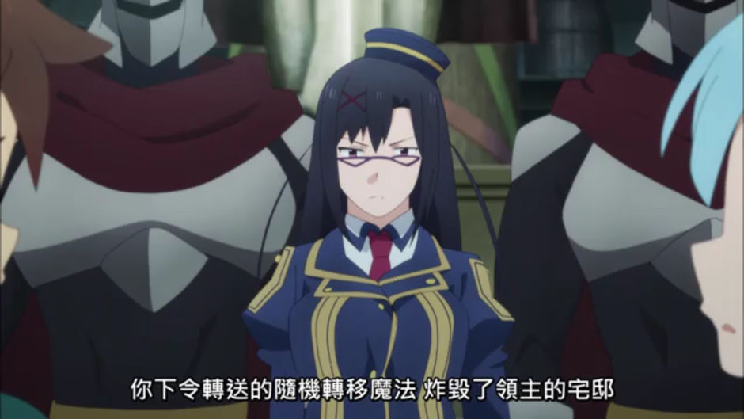
瑟娜（セナ，Sena，聲：生天目仁美）
阿克塞爾的王國檢察官，年齡20歲。懷疑和真是魔王軍的間諜而逮捕和真，其後解開誤會。其實本性並不壞，只是因個性認真、又聽到和真的不好傳言才對和真態度不好。
原本是在阿爾坎雷堤雅上任，但受不了傑斯塔的騷擾而調任至阿克塞爾。傳聞在解決某個事件之後，以王都檢察官的身分東山再起。
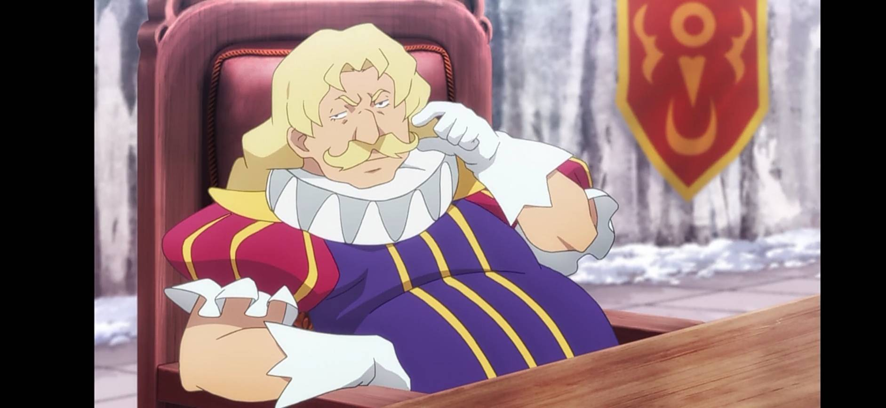
亞歷克賽·巴聶斯·阿爾達普（アレクセイ・バーネス・アルダープ，Alexei Barnes Alderp，聲：長嶝高士）
外表肥胖又好色的大領主。在機動要塞事件中，宅邸被和真指示轉移走的日冕礦石炸了，一氣之下把和真告上法院。
對拉拉蒂娜有著異樣的執著與慾望。曾經兩次想要利用互換身體的神器，搶走王子或養子巴爾特的身體，與達克妮絲結婚。之後利用領地賠款問題，使達斯堤尼斯家欠了他一大筆錢，並逼達克妮絲嫁給他以還債。最後婚禮被和真破壞，並被召喚出的惡魔馬克士威爾拖去地獄失蹤；以前幹的壞事也全被揭發，財產全部被拿去賠償或充公。
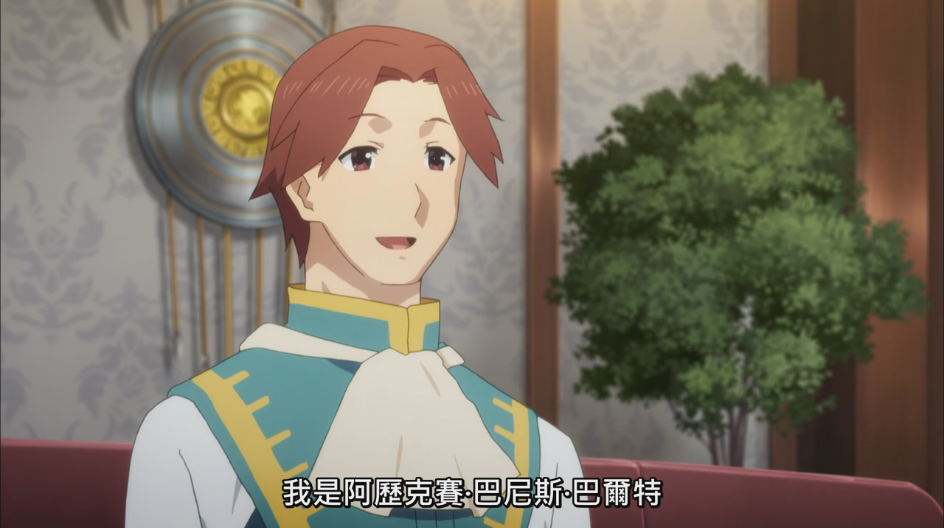
亞歷克賽·巴聶斯·巴爾特（アレクセイ・バーネス・バルター，Alexei Barnes Walther，聲：石川界人）
阿爾達普的養子，是個標準的模範帥哥，更是史上最年輕的受封騎士。被父親強迫跟達克妮絲相親，卻意外迷上她。不同於阿爾達普，為人行事非常正直清廉，還常對不當政策提出糾舉。阿爾達普失蹤後，成為新領主（達克妮絲的父親）的助手。
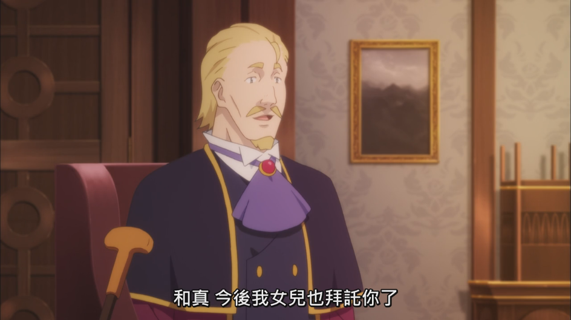
達斯堤尼斯·福特·伊格尼斯（ダスティネス・フォード・イグニス，Dustiness Ford Ignis，聲：井上和彥）
達克妮絲的父親。身為國王的參謀總長，其家族被尊稱為「王國的懷刃」。阿爾達普為奪取達克妮絲，遂要求馬克士威爾對伊格尼斯下死咒，後被阿克婭發現後解除。相當溺愛達克妮絲，每次回來叫女兒相親都會被先來個摔角後再被拒絕，也知道他女兒的癖好，並要求佐藤和真照顧他女兒。
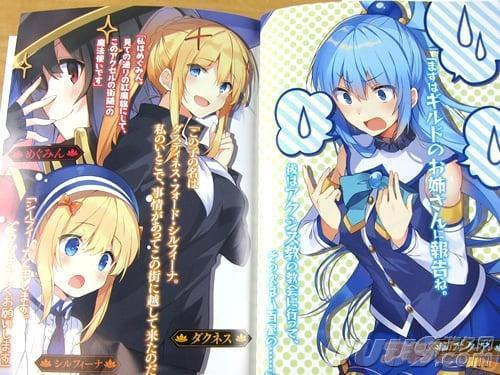
達斯堤尼斯·福特·西兒菲娜
達克妮絲的堂妹，年紀約比米米小一點。自幼喪母，因受達克妮絲多方面的照顧而稱她為「媽媽」，剛開始造成大家對達克妮絲的誤會。雖具備母系強大的魔力與魔法抗性，但也因此體弱多病。因魔王軍的動態越來越活絡而受到達克妮絲的邀請搬到最安全的新手城鎮阿克塞爾。疑似在前往阿克塞爾的途中感染疾病「霍蘿莉」而病倒，因此和真與達克妮絲踏上旅程取得解藥的原料，最後恢復健康。
卡蓮（カレン，Karen）
朵內利家的當家，朵內利家一直是致力於放高利貸的家族。貴族的地位很低，但是在財産上甚至能比達斯堤尼斯家更富有。因使用可隨機召喚，但無法控制怪物的魔道具，而使得住宅周邊充滿了怪物，且讓艾莉絲女神誤認為藏在湖底的神器被卡蓮拿去用。佐藤和真與艾莉絲再度當盜賊團進入卡蓮家中，雖然沒發現神器，但仍將魔道具取走交給達克妮絲，讓達克妮絲處理卡蓮家。
達克妮絲非常討厭卡蓮，甚至用身材優勢壓倒卡蓮。之後因知道卡蓮曾欺負惠惠後大為光火，準備要派人把卡蓮家給滅了。
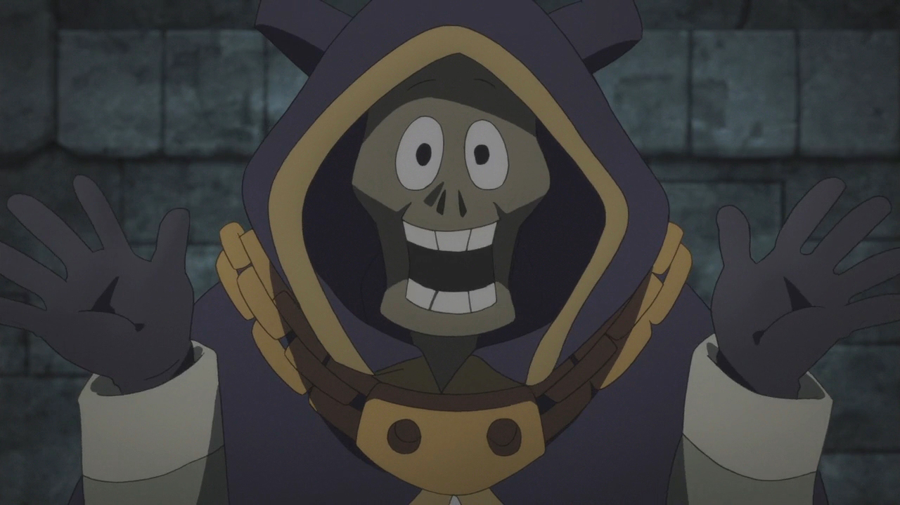
基爾（キール，Keele，聲：飛田展男）
生前曾是頗富盛名的大魔法師，私底愛戀著和其中一名長期遭國王虐待的某位貴族千金，因有功而受國王（聲優：樫井笙人）賞賜，便求國王讓自己鍾愛的貴族千金能幸福，遭拒絕後便擄走貴族千金、同時與國家為敵。期間身負重傷，為了能繼續保護愛人而放棄人身、成為永恆不朽的巫妖，並深居於地下城中。愛人過世且自己沉睡經歷數載歲月後，於地下城感應到隨同和真探索地城的阿克婭散發的神聖氣息而再度甦醒，遂趁機拜託找到他的阿克婭將自己淨化，最後終得一死，與愛人在另一個世界重逢。
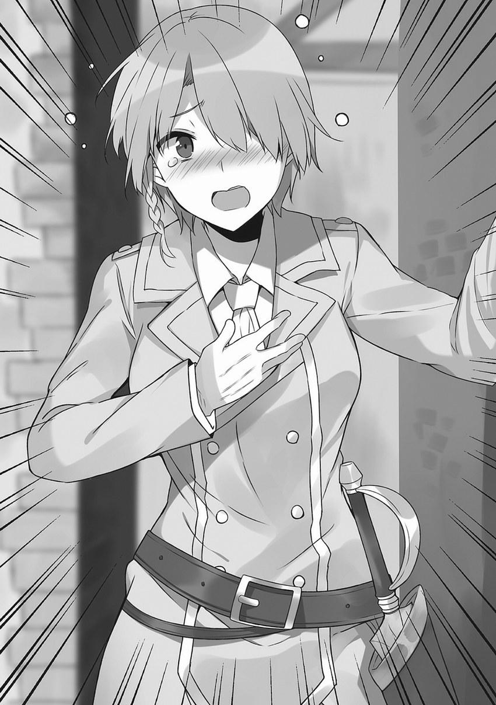
克萊兒·詩芳尼亞（クレア・シンフォニア，Claire Symphonia）
愛麗絲公主的女性貼身護衛之一，劍術高超。經常身穿白西裝。其出身是足以與達斯堤尼斯家比肩的，詩芳尼亞家的長女。
對愛麗絲的事非常執著，也非常沒有抵抗力。在佐藤和真不慎啟動神器，使佐藤和真與愛麗絲公主交換身體，控制著愛麗絲公主身體的佐藤和真故意進入女浴池裡，讓克萊兒與達克妮絲一起洗澡。
蕾茵（レイン，Rain）
愛麗絲公主的女性貼身護衛之一，職業是魔法師，會用長距離移動的傳送魔法。與克萊兒相比較有一般平民知識，常因身在王都卻不起眼而感到煩惱。 外傳中提及因家境問題而有點緊張自身財務。
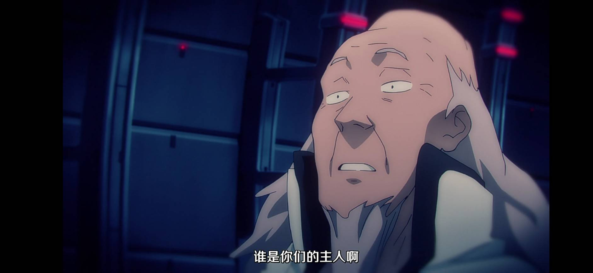
博士（聲：長）
「機動要塞毀滅者」的製造者及負責人，同時也是進行將人體改造成紅魔族的製造者，因各種豐功偉業而被一個國家重用。由於預算過少就隨意製造了該器械，在機動要塞毀滅者暴走後因為無法停止便放任其破壞，將此一過程記於日記上後、便在毀滅者上終老。
第二季OVA（11話）說明其原來也是轉生冒險者之一，擁有「具現化想像」的能力，本想用能力創造武器打倒魔王，但後來因為具現化的武器都認為無法打倒魔王之後就徹底放棄，改而用能力製造理想的機器人，目標是製造完美的美少女機器人但也是不順利，又由於本身是抖M，所以想將機器人作成女王屬性，但最後因為覺得麻煩、還是真正的女人好，直接跑去古代魔法王國任官，不過總是被國家上層苛刻。
在劇場版中揭示了他與紅魔族之間的淵源，得知他的抖M體質依舊還存在，以及創造了另外兩樣副產品：「魔術師殺手」以及「超電磁砲」這兩樣威力強大的古代（現代）兵器，前者被紅魔村封印並看守，後者因紅魔族不知道有什麼用途而被拿去作為洗衣桿。
.jpg)
露娜（ルナ，Luna，聲：原紗友里）
冒險者公會的接待員，是個巨乳美人。常常因為被達斯特等冒險者惹出來的問題搞得暈頭轉向，而找巴尼爾喝酒訴苦。為自己嫁不出去而對嫁出去的女性嚴重忌妒，這種負面情感使得巴尼爾十分受用。
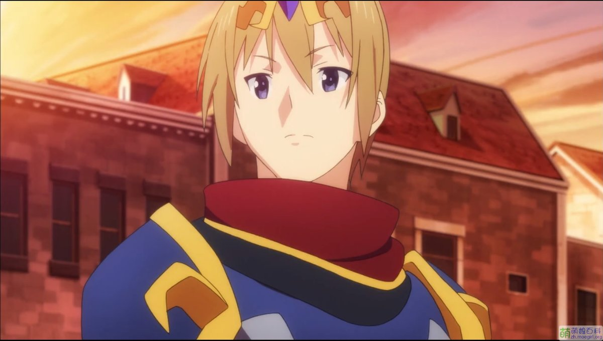
御劍響夜（御剣響夜（ミツルギ キョウヤ），Mitsurugi Kyouya，聲：江口拓也／鳥海浩輔）
跟和真一樣從日本轉生過來的冒險者，職業是劍術大師。因為有阿克婭給的魔劍，在異世界的發展一直相當優渥，也因此有點自戀。 在遇見和真的小隊後，向和真要求決鬥，企圖把阿克婭帶走；卻被和真使計打暈，並被和真拿走魔劍賣掉，似乎因而造成心理創傷。 非常敬重給他魔劍的阿克婭，但是阿克婭早就忘了他。
贖回魔劍（第二季OVA 11話已贖回）修行回來後，又在王都被扮成面具義賊的和真以灌水到口鼻並加以冰凍致窒息的方式打倒。
找到離家出走的阿克婭後直接組隊前往魔王，完全不吐糟阿克婭的耍笨行為。
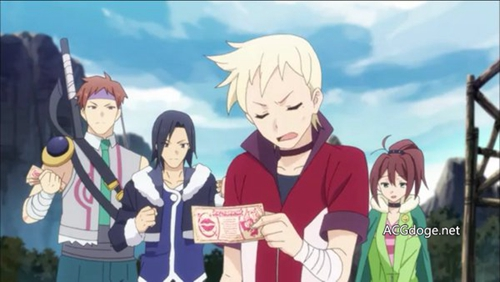
達斯特（ダスト，Dust，聲：間島淳司）
公會的混混型冒險者，泰勒小隊的成員。因為說和真的小隊是後宮型而被強制換隊，後來過程悽慘之後哭著求和真換回來。和真的朋友之一，芸芸的朋友（自稱）。因為有事沒事就搭訕路人而成為警局的常客。被一位同性戀貴族看上，同隊的琳恩被他要求幫忙拍達斯特的照片。
本名似乎叫作萊因·薛克，原為鄰國的下級貴族，而且是稀有職業龍騎士，槍術本領十分高強。然而因為了完成公主願望而綁架公主一周，因此被剝奪龍騎士資格並且家族沒落，後改使劍。
對琳恩抱有複雜的情感。
泰勒（テイラー，Taylor，聲：土田玲央）
使單手劍的十字騎士，也是泰勒小隊的隊長。常常一副重裝備的樣子。
奇斯（キース，Keith，聲：羽多野涉）
泰勒小隊中的輕浮弓手，常常跟達斯特一起混。
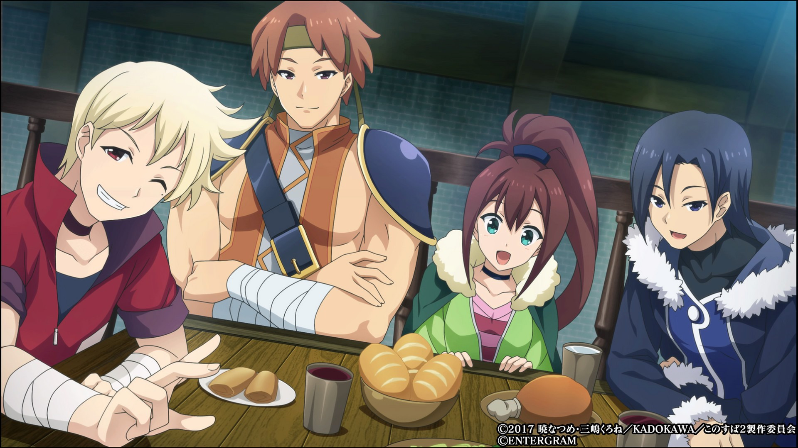
琳恩（リーン，Lean，聲：花守由美里）
泰勒小隊中唯一的法師，能用中級魔法。外表稚氣，年紀似乎比和真還小。因為經常為達斯特惹出來的事情擦屁股而被認為是其監護人。